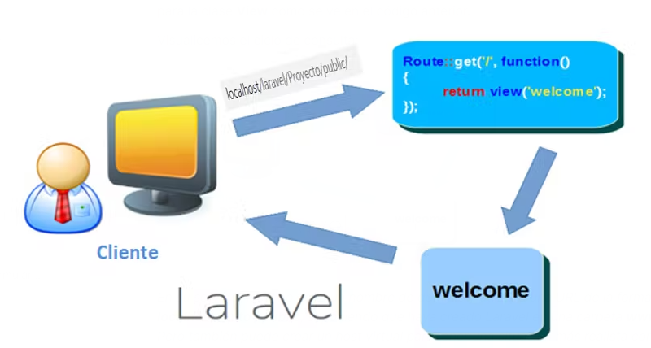
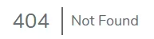

Rutas
Una ruta (route) vincula una solicitud HTTP con una acción. Cuando llega una solicitud, Laravel busca una ruta que coincida con su método HTTP y la ruta de su URI, y ejecuta la acción de esa ruta.
Escribimos las rutas de la interfaz web en el archivo routes/web.php. Para utilizar la clase Route en los ejemplos, asegúrate de que esta importación aparece al principio del archivo:
use Illuminate\Support\Facades\Route;
Documentación oficial de Laravel 13 · Routing
Métodos HTTP
| Método | ¿Para qué se suele utilizar? |
|---|---|
GET |
Para obtener una página o algunos datos. |
POST |
Para enviar datos. Por ejemplo, para crear un recurso nuevo. |
PUT |
Para sustituir por completo el contenido de un recurso. |
PATCH |
Para actualizar una parte de un recurso. |
DELETE |
Para eliminar un recurso. |
Se puede utilizar la misma URI con métodos diferentes. Por ejemplo, GET /test y POST /test son rutas distintas.
Route::get('/test', function () {
return 'Método GET';
});
Route::post('/test', function () {
return 'Método POST';
});
Route::put('/test', function () {
return 'Método PUT';
});
Route::patch('/test', function () {
return 'Método PATCH';
});
Route::delete('/test', function () {
return 'Método DELETE';
});
Al escribir una URL en la barra de direcciones del navegador, este realiza una solicitud GET. Para probar POST, por ejemplo, podemos utilizar method="POST" y @csrf en un formulario Blade. Veremos los formularios correspondientes a los métodos PUT, PATCH y DELETE en la sección CRUD.
Enrutamiento básico
En un proyecto Laravel nuevo, es habitual que las rutas iniciales muestren la vista welcome:
Route::get('/', function () {
return view('welcome');
});
Para probarlo, sustituye la ruta anterior por esta:
Route::get('/', function () {
return '¡Bienvenido!';
});
El primer argumento de Route::get() es la ruta de la URI. El segundo es la acción que se ejecutará cuando una solicitud GET coincida con esa ruta. En el ejemplo, la acción es una función anónima y su return proporciona el contenido de la respuesta.

Rutas fijas
Supongamos que queremos crear las direcciones /1, /2 y /3. Podemos definir una ruta para cada dirección:
Route::get('/1', function () {
return '¡Soy la página 1!';
});
Route::get('/2', function () {
return '¡Soy la página 2!';
});
Route::get('/3', function () {
return '¡Soy la página 3!';
});
Si lo único que cambia es el número de la página, podemos sustituir las tres rutas por una ruta con un parámetro.
Rutas con parámetros
Un parámetro
El parámetro {number}, escrito entre llaves, recibe el valor de un segmento de la URL. Laravel pasa ese valor a la función.
Route::get('/{id}', function (string $id) {
return 'El número de mi página: ' . e($id) . '!';
});
En la solicitud GET /2, la variable $id toma el valor '2'. La solicitud GET /4 también coincide con la ruta. En cambio, si solo estuvieran definidas las tres rutas fijas anteriores, la dirección /4 devolvería un error 404.
Dos parámetros
Route::get('/posts/{category}/{id}', function (string $category, string $id) {
return 'Categoría: ' . e($category) . ', publicación: ' . e($id);
});
| Solicitud | Resultado |
|---|---|
GET /posts/technology/7 |
Categoría: technology, publicación: 7 |
GET /posts/music/12 |
Categoría: music, publicación: 12 |
GET /posts/music |
404, si no hay otra ruta que coincida con la solicitud. |
El helper e() prepara el valor recibido de la URL para mostrarlo como texto en HTML.
Parámetro opcional y valor predeterminado
Para que un parámetro sea opcional, escribe ? después del nombre y proporciona un valor predeterminado al argumento de la función.
Route::get('/welcome/{name?}', function (string $name = 'invitado') {
return 'Hola, ' . e($name);
});
| Solicitud | Respuesta |
|---|---|
GET /welcome |
Hola, invitado |
GET /welcome/Jon |
Hola, Jon |
El valor predeterminado se utiliza cuando falta el segmento. Si también estás probando la ruta general anterior /{id}, coloca /welcome/{name?} antes de ella, ya que la dirección /welcome coincide con ambas rutas.
Orden de las rutas
Cuando dos rutas pueden coincidir con el mismo método HTTP y la misma ruta, coloca primero la ruta más específica. En este ejemplo, la dirección /contact coincide con la ruta fija y con la ruta dinámica /{number}.
Para ver el orden, elimina la definición anterior de /{id} y utiliza este bloque:
Route::get('/contact', function () {
return 'Página de contacto';
});
Route::get('/{id}', function (string $id) {
return 'El número de mi página: ' . e($id) . '!';
});
- En este orden, la solicitud
GET /contactmuestraPágina de contacto. - Si se intercambia el orden de las dos rutas, la primera recibe
contactcomo parámetro y muestraEl número de mi página: contact!. - La solicitud
GET /7utiliza la ruta dinámica en ambos órdenes.
Restricciones de los parámetros
El nombre del parámetro {id} no limita su contenido a números. Para ello, debemos añadir una restricción a la ruta.
Expresión regular con where()
Route::get('/users/{id}', function (string $id) {
return 'Usuario: ' . $id;
})->where('id', '[0-9]+');
La expresión [0-9]+ acepta uno o más dígitos.
Helpers para restricciones
Podemos sustituir la definición anterior de /users/{id} por whereNumber():
Route::get('/users/{id}', function (string $id) {
return 'Usuario: ' . $id;
})->whereNumber('id');
La solicitud GET /users/7 mostrará Usuario: 7. En cambio, la solicitud GET /users/alex devolverá un error 404 si no coincide con otra ruta. La ruta /users/999 cumple la condición porque contiene dígitos. Comprobar si el usuario existe realmente es responsabilidad de la aplicación.
| Helper | Valor que acepta |
|---|---|
whereNumber('id') |
Dígitos. |
whereAlpha('category') |
Letras de a–z o A–Z. |
whereAlphaNumeric('code') |
Letras y dígitos alfanuméricos (a–z, A–Z, 0–9). |
whereIn('category', ['music', 'technology']) |
Los valores que aparecen en la lista. |

Rutas con nombre
Podemos asignar un nombre a una ruta mediante el método name(). Después, el helper route() genera su URL. Para probar el ejemplo de la ruta inicial, añade ->name('home') a la definición existente:
Route::get('/', function () {
return '¡Soy la página de inicio!';
})->name('home');
En una vista Blade:
<a href="{{ route('home') }}">Inicio</a>
Si la ruta tiene un parámetro, podemos proporcionar su valor en el segundo argumento. Por ejemplo, si añadimos ->name('users.show') a la ruta /users/{id}, la llamada route('users.show', ['id' => 7]) genera la URL correspondiente a la ruta /users/7.
Grupos de rutas con un controlador
Si varias rutas utilizan el mismo controlador, podemos usar Route::controller() y group() para escribir el nombre del controlador una sola vez. Este ejemplo necesita CourseController y los métodos index, create y show definidos en él.
use App\Http\Controllers\CourseController;
Route::controller(CourseController::class)->group(function () {
Route::get('/courses', 'index');
Route::get('/courses/create', 'create');
Route::get('/courses/{course}', 'show');
});
La ruta fija /courses/create va antes que la ruta dinámica /courses/{course}.
Rutas de recurso
El comando php artisan make:controller StudentController --resource crea un controlador con métodos para las acciones CRUD. El método Route::resource(), por su parte, registra las rutas correspondientes a esas acciones.
use App\Http\Controllers\StudentController;
Route::resource('students', StudentController::class);
| Método HTTP | Ruta | Método del controlador | Nombre de la ruta |
|---|---|---|---|
GET |
/students |
index |
students.index |
GET |
/students/create |
create |
students.create |
POST |
/students |
store |
students.store |
GET |
/students/{student} |
show |
students.show |
GET |
/students/{student}/edit |
edit |
students.edit |
PUT / PATCH |
/students/{student} |
update |
students.update |
DELETE |
/students/{student} |
destroy |
students.destroy |
Si solo necesitamos la lista y la página de detalles, sustituye la declaración anterior por esta:
Route::resource('students', StudentController::class)->only(['index', 'show']);
Si definimos una ruta adicional como /students/featured, colócala antes de la declaración Route::resource(). Así, la ruta generada /students/{student} no tomará featured como parámetro.
Comprobar las rutas
En el directorio raíz del proyecto, podemos ejecutar estos comandos:
php artisan route:list
Comprueba el método, la URI, el nombre y la acción. Si al probar una ruta no obtienes la respuesta esperada, revisa el método de la solicitud, las restricciones de los parámetros y el orden de las rutas que pueden coincidir con la ruta.